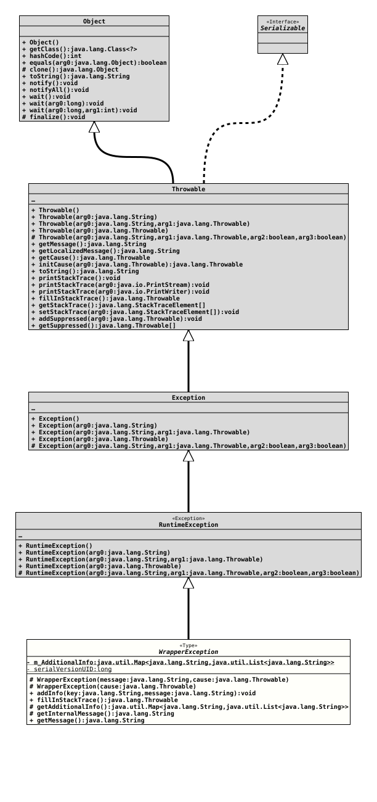

Class WrapperException
- All Implemented Interfaces:
Serializable
A wrapper exception that can be used as base class for a domain specific root exception.
The derived exception classes must provide the usual constructors that
set the detailed message and the cause; these will call
WrapperException(String,Throwable,boolean).
A derived class can be used exclusively as a wrapper or container for
other exceptions when it will create its instances with
retrieveStack set to false, meaning that it does not populate
the stack trace. Such a container requires that cause is not
null and when wrapping other instances of WrapperException, their cause
is stored as the cause of the new instance.
If a derived class should be extended by other exception classes with
different behaviour, it is mandatory to expose the constructor
WrapperException(String,Throwable,boolean),
too.
- Note:
-
- Each hierarchy of domain specific exceptions should have only one
wrapper or container exception (an exception class that sets
retrieveStacktofalse).
- Each hierarchy of domain specific exceptions should have only one
wrapper or container exception (an exception class that sets
- Author:
- Thomas Thrien (thomas.thrien@tquadrat.org)
- Version:
- $Id: WrapperException.java 1301 2026-11-22 10:56:12Z tquadrat $
- Since:
- 0.25.16
- See Also:
- UML Diagram
-

UML Diagram for "org.tquadrat.foundation.exception.WrapperException"

-
Field Summary
FieldsModifier and TypeFieldDescriptionThe container for the additional information. -
Constructor Summary
ConstructorsModifierConstructorDescriptionprotectedWrapperException(String message, Throwable cause, boolean retrieveStacktrace) Constructs a new instance ofWrapperExceptionwith the specified detail message, cause, and whether the stack trace should be retrieved. -
Method Summary
Methods inherited from class Throwable
addSuppressed, fillInStackTrace, getCause, getLocalizedMessage, getStackTrace, getSuppressed, initCause, printStackTrace, printStackTrace, printStackTrace, setStackTrace, toString
-
Field Details
-
m_AdditionalInfo
The container for the additional information.
-
-
Constructor Details
-
WrapperException
Constructs a new instance of
WrapperExceptionwith the specified detail message, cause, and whether the stack trace should be retrieved.If
retrieveStacktraceisfalse, the instance is a pure wrapper or container for other exceptions; consequentlycausecannot benullifretrieveStacktraceisfalse. In that case, ifcauseis an instance ofWrapperException, it will be replaced by its cause if that is notnull. In that case, the additional information is merged, too.If
messageisnullandcauseis an instance ofWrapperException, the internal message ofcauseis used instead.If
messageisnullandcauseis another exception type, the result ofcause::toStringis used as the detailed message for the new instance.- Parameters:
message- The detail message that is saved for later retrieval by thegetMessage()method. It can benull.cause- The cause that is saved for later retrieval by theThrowable.getCause()method.retrieveStacktrace-trueif the stack trace will be retrieved and is writable,falseif the instance should behave like a regular exception.
-
-
Method Details
-
addInfo
-
getAdditionalInfo
Return the additional infos.
- Returns:
- The additional info.
-
getInternalMessage
Returns the internal message.
- Returns:
- The internal message.
-
getMessage
- Overrides:
getMessagein classThrowable
-